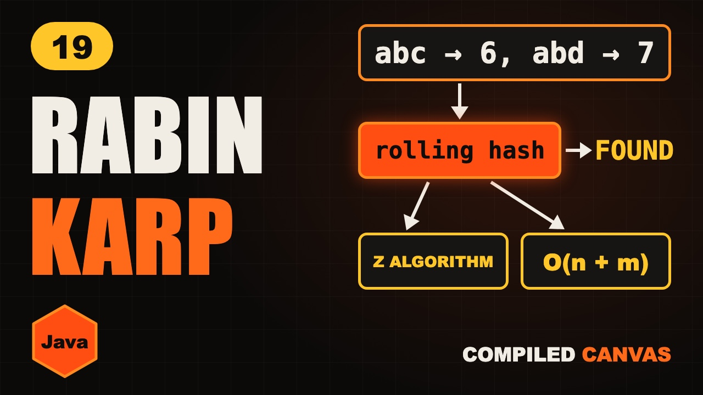

Rabin-Karp Algorithm in Java: Rolling Hash Explained

The video goes live on 21 Nov 2026 at 6:00 PM IST. The notes are ready now.
?What this episode covers
Comparing two strings takes many steps, but comparing two numbers takes one. Rabin-Karp turns every window of the text into a number, a hash, and compares hashes instead of letters.
A simple sum hash shows the problem: abc and cab both hash to 6, a spurious hit. So you always check the letters when hashes match, and use a polynomial hash where order matters. The rolling hash updates each window in one step: remove the letter leaving, shift by the base, add the letter coming in, all modulo a big prime.
The Z algorithm builds an array where z[i] is how many letters from i match the start of the string. Join pattern + $ + text, and every z equal to the pattern's length is a match. Both run in linear time on average.
◎What you'll be able to do
- Hashing a window
- False matches
- The rolling hash
- Rabin-Karp in Java
- The Z algorithm
{ }The Java code from the video
Type it out yourself, or copy it. Each file runs on its own with java FileName.java and prints the examples from the video.
import java.util.*;
// Episode 19: Rabin-Karp with a rolling hash, and the Z algorithm. Run: java StringMatching.java
public class StringMatching {
// Rabin-Karp: compare hashes, and check the letters when they match
static int search(String t, String p) {
int n = t.length(), m = p.length();
if (m > n) return -1;
long B = 256, M = 1_000_000_007L;
long hp = 0, ht = 0, pow = 1;
for (int i = 0; i < m; i++) {
hp = (hp * B + p.charAt(i)) % M;
ht = (ht * B + t.charAt(i)) % M;
if (i > 0) pow = pow * B % M;
}
for (int i = 0; ; i++) {
if (hp == ht && t.startsWith(p, i)) return i;
if (i + m == n) return -1;
ht = (ht - t.charAt(i) * pow % M + M) % M; // remove the letter leaving
ht = (ht * B + t.charAt(i + m)) % M; // shift, add the letter coming in
}
}
// z[i] = how many letters from i match the start of s
static int[] zArray(String s) {
int n = s.length();
int[] z = new int[n];
char[] c = s.toCharArray();
for (int i = 1, l = 0, r = 0; i < n; i++) {
if (i < r) z[i] = Math.min(r - i, z[i - l]);
while (i + z[i] < n && c[z[i]] == c[i + z[i]])
z[i]++;
if (i + z[i] > r) { l = i; r = i + z[i]; }
}
return z;
}
// every place p appears in t, using pattern + "$" + text
static List<Integer> zSearch(String t, String p) {
int[] z = zArray(p + "$" + t);
List<Integer> found = new ArrayList<>();
for (int i = p.length() + 1; i < z.length; i++)
if (z[i] == p.length()) found.add(i - p.length() - 1);
return found;
}
public static void main(String[] args) {
System.out.println(search("abcabd", "abd")); // 3
System.out.println(Arrays.toString(zArray("ab$xabab"))); // [0, 0, 0, 0, 2, 0, 2, 0]
System.out.println(zSearch("xabab", "ab")); // [1, 3]
}
}!The mistake to watch for
Trusting a hash match without checking the letters.
✦Key moments tap one to jump there
↗Full transcript
Read the whole lesson
Comparing two words means checking them letter by letter. Comparing two numbers takes one step.
So what if we turned every window of the text into a number, and compared numbers instead?
That's Rabin-Karp. And then we'll learn the Z algorithm, another clever way to match patterns in linear time.
Welcome back to Compiled Canvas. This is Episode Nineteen of our DSA series. Last time, we learned the KMP algorithm.
Here's the plan. First, the idea of hashing a window. Then the problem of false matches. Then the rolling hash. Then Rabin-Karp in Java. And then the Z algorithm. A cheat sheet. And an easy quiz at the end.
Let's go.
Let's start with a very simple hash. Give each letter a number. A is one, b is two, c is three, d is four.
The hash of a word is the sum. The pattern a b d is one plus two plus four. Seven.
Now slide a window of three over the text. A b c is six. B c a is six. C a b is six.
A b d is seven. The hashes match, so now we check the letters. They match too. Found at index three.
But this hash has a problem. Search for c a b instead. Its hash is also six.
So a b c matches the hash, but the letters are different. That's a false match, called a spurious hit.
Two rules fix this. Always check the letters when hashes match. And use a better hash, where the order of letters matters.
The usual one treats the word like a number in a big base. Like reading the digits one two three as one hundred and twenty three.
Computing each window's hash from scratch costs m steps. The rolling hash updates it in one step.
Think of digits again. The window is one two three. To slide to two three four, take away the one hundred, times by ten, and add four.
Remove the letter leaving, shift, and add the letter coming in. One step, whatever the window size.
The numbers get huge, so we keep them small with modulo a big prime, like ten to the nine plus seven.
Here's Rabin-Karp in Java. B is the base, and M is the big prime.
First, hash the pattern, and the first window of the text.
Pow is B to the power m minus one. We need it to remove the letter that leaves.
If the hashes match, check the letters too. That stops spurious hits.
Then roll. Remove the leaving letter, shift by B, and add the new letter.
On average this is O of n plus m. In the rare worst case, with many false matches, it can be n times m.
Quick pause, before we go further. If you're finding this video valuable, hit subscribe to Compiled Canvas, and turn on the bell. It's free, it takes one second, and it helps me keep making this complete DSA series for you. Alright, back to it.
Now the Z algorithm. For each position, the Z array stores how many letters, starting there, match the start of the string.
Here's the trick for pattern matching. Join the pattern, a separator, and the text. A b, dollar, x a b a b.
Now fill in the Z values. At index four, a b matches the start. Z is two. At index six, a b again. Two.
Wherever Z equals the pattern length, two, we've found the pattern. The dollar sign makes sure a match can't run past the pattern.
It builds the Z array in O of n plus m, because it reuses a box of letters it already matched, a lot like KMP reuses LPS.
Here's the Z array in Java. L and r mark the box we've already matched.
Inside the box, we start from a value we already know, instead of from zero.
Then we extend as far as letters keep matching, and move the box if we went further.
Your turn. Pause. Which one would you use to find many patterns of the same length?
Rabin-Karp. Hash every pattern into a set, then roll one window across the text and check the set.
So, here's the whole thing in one cheat sheet. Pause and screenshot this.
Rabin-Karp compares hashes instead of letters.
Same hash? Check the letters.
The rolling hash updates in one step.
Use modulo a big prime.
Z array: how much matches the start.
Pattern, dollar, text. Z equals m means found.
Okay, quiz time. Three easy questions. Pause the video, think, and then hit play.
Question one. With the sum hash, what's the hash of b a?
Question two. Two windows have the same hash. Are they always equal?
Question three. In the Z trick, what do we put between the pattern and the text?
Ready?
Question one: Three. Two plus one.
Question two: No. It could be a spurious hit, so check the letters.
Question three: A separator, like a dollar sign.
How many did you get right? Tell me in the comments: three out of three, two, or one.
Let's recap. Turn windows into numbers. Roll the hash in one step. Always check letters on a hash match. The Z array measures matches with the start. Both run in linear time on average.
Your homework. Solve LeetCode twenty eight again, this time with Rabin-Karp. Then try one eighty seven, repeated DNA sequences, with a rolling hash. And then fill in the Z array for a a b a a by hand. Hints and Java answers are on compiled canvas dot com.
Next episode, the top fifteen string interview questions, sorted by pattern.
And don't forget to subscribe to Compiled Canvas, so you don't miss anything new in tech and the job market. Keep coding, stay consistent, and I'll see you in the next one.